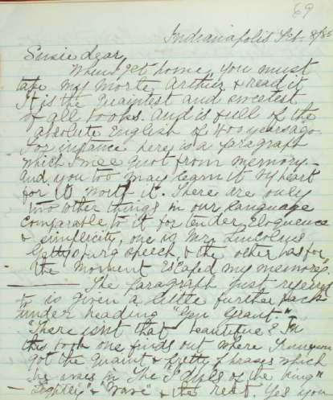

A Page from Susy's Book |
| Susie dear, When I get home, you must take my Morte Arthur & read it It is the quaintest and sweetest of all books. And is full of the absolute English of 400 years ago. For instance here is a paragraph which I will quot from memory. And you too may learn it by heart for its worth it. There are only two other things in our language comparable to it for tender eloquence & simplicity, one is Mr. Lincolns Gettysburg speech, & the other has for the moment escaped my memory. ------The paragraph just referred to is given a little further back under the heading "Gen. Grant." "There isnt that beautiful? In this book one finds out where Tennyson got the quaint & pretty phrases which he uses in The "Idols of the king" -- "Lightly" & "Wave" & the rest. Yes you [next sheet] must read it when I come sweetheart. Kiss mamma for me; and Ben and Jean. Papa |
 |
|
"Ben" was the family nickname for Clara. The passage from Malory MT quoted must have been the following, reproduced here with Susy's spelling and punctuation. MT used it in a tribute to Grant after his death: Ah Launcelot thou were head of all christian knights! And now I dare say, thou Sir Launcelot, there thou liest, that thou were never matched of earthly knits hands; and thou were the courtiest knight, that ever bare shield, and thou were the truest friend to thy friend that ever bestrode horse; and thou were the truest lover, of a sinful man, that ever loved woman, and thou were the kindest man that ever strake with sword; and thou were the goodliest person that ever came among the press of knights; and thou were the meekest man and the gentlest that ever ate in hall among ladies, and thou were the sternest knight to thy mortal foe that ever put spear in rest. Susy's "biography" contains one other passage pertaining directly to the composition of Connecticut Yankee. In a paragraph dated "Feb. 22" [1886], she writes, "Yesterday evening papa read to us the beginning of his new book, in manuscript, and we enjoyed it very much, it was founded on a New Englanders visit to England in the time of King Arthur and his round table." |